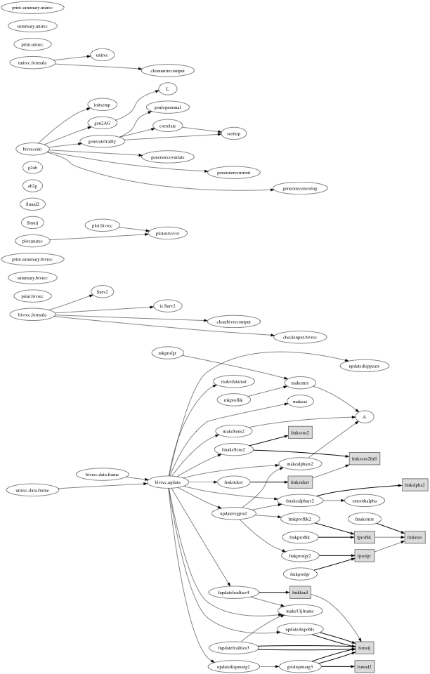

TABLE OF CONTENTS
- 1. /00main
- 1.1. 00main/bivrec.agdata
/00main [ Modules ]
NAME
blupsurv --- package root
FUNCTION
The blupsurv package contains tools for fitting proportional hazards models to clustered recurrent events data. Nested frailties are modeled by their best linear unbiased predictors under an auxiliary Poisson model. Univariate and bivariate recurrent events processes are permitted.
The most important function is bivrec.agdata, which does most of the model fitting. After initializing, fitting consists of iteratively calling fupdatefrailties4 to update frailty estimates, updatedisppears to update dispersion parameter estimtes, and updateregprof to update regression parameter estimates. The function fmkstderr computes standard errors at the end.
See the functions in the bivrecFit module for details on the estimation procedure.
Modules methodsBiv and methodsUni contain the R S3 methods for fitting bivariate and univariate models respectively.
The call graph below is rather small and unhelpful. See a larger but equally unhelpful pdf version here: callgraph.pdf

CONTENTS
bivrec.agdata --- fitter for bivariate models
USAGE
For usage instructions, see the R package documentation
AUTHOR
Emmanuel Sharef